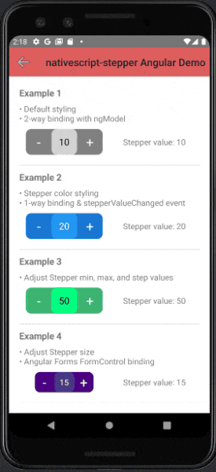
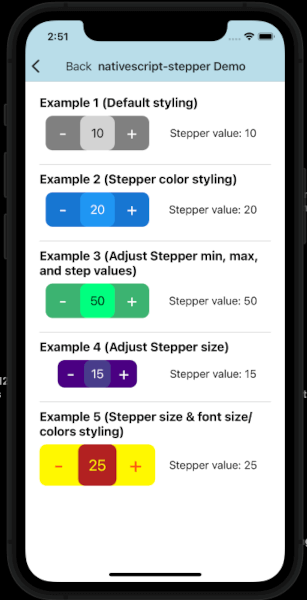

NativeScript doesn't have a stock stepper UI component, so this plugin supplies
one. You can specify the minimum, maximum, and step values, as well as its style
like color, bg color, font size, etc... This stepper is also compatible with
Angular and Angular Forms. It is made with purely NativeScript code, so it has
the benefit of looking exactly the same on both Android and iOS. I could have
used iOS's native stepper, UIStepper, but Android doesn't have a comparable
native stepper widget.
NOTE: Only works with NativeScript v7+
ns plugin add @rob4226/nativescript-stepper
 
See the demo app for more examples.
<StackLayout xmlns:nsStepper="@rob4226/nativescript-stepper">
<!-- Default Stepper with just a 2-way binding to it's value. -->
<nsStepper:Stepper value="{{ value1 }}" />
<!-- Stepper with all possible options. -->
<!-- Default size is width: 150 height: 50 -->
<!-- Default fontSize: 18 buttonsFontSize: 26 -->
<nsStepper:Stepper
value="{{ value2 }}"
stepperValueChanged="{{onStepperValueChanged}}"
step="10"
minValue="1"
maxValue="1000"
width="130"
height="30"
fontSize="16"
buttonsFontSize="24"
valueColor="#fff700"
valueBackgroundColor="#b22222"
buttonsColor="#fb4f14"
buttonsBackgroundColor="#fff700"
/>
</StackLayout>
See the demo-angular app for more examples, especially for using with Angular Forms.
<!-- Default Stepper with just a 2-way binding to it's value. -->
<Stepper [(ngModel)]="value1"></Stepper>
<!-- Stepper with all possible options. -->
<!-- Default size is width: 150 height: 50 -->
<!-- Default fontSize: 18 buttonsFontSize: 26 -->
<Stepper
[value]="value2"
(stepperValueChanged)="onStepperValueChanged($event)"
step="10"
minValue="1"
maxValue="1000"
width="130"
height="30"
fontSize="16"
buttonsFontSize="24"
valueColor="#fff700"
valueBackgroundColor="#b22222"
buttonsColor="#fb4f14"
buttonsBackgroundColor="#fff700"
></Stepper>
<!-- `[formControl]="stepperFormControl"` and `formControlName="fieldName"` bindings are also available
for use with @angular/forms. -->
Apache License Version 2.0
Generated using TypeDoc